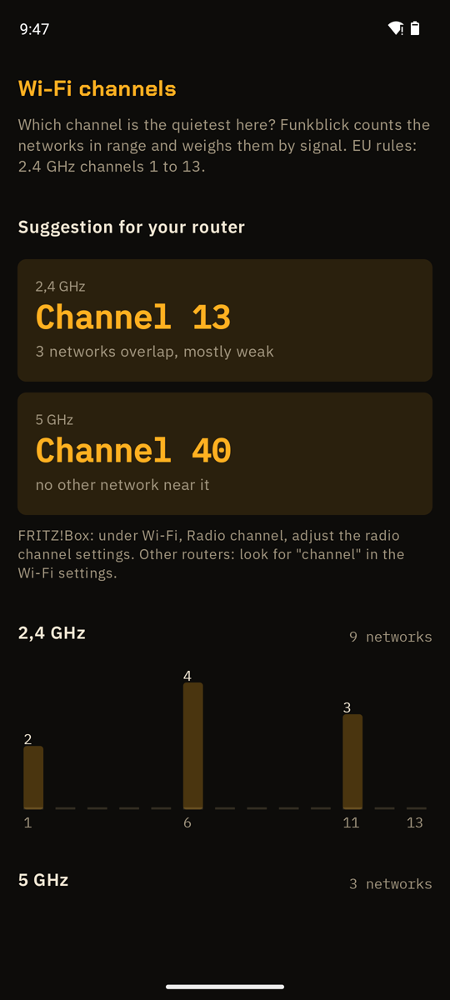

Find the best Wi-Fi channel
Funkblick counts the networks per channel and picks the quietest.
Download the APKSource on GitHub
Free, Android 8.0 or newer, runs on GrapheneOS without Google services. No account.

Funkblick is a Wi-Fi analyzer: Android shows it every network in range, and Funkblick counts them per channel, weighs them by signal strength and suggests the quietest 2.4 GHz and 5 GHz channel for your own router.
Set it on your router
- Start the scan in Funkblick and open Wi-Fi channels for your router under More. Best where your Wi-Fi is weak.
- Note the suggestion for 2.4 and 5 GHz.
- Open your router’s web page, usually printed on its label, and find the radio or channel settings.
- Enter the channel, save, and check again in Funkblick after a few minutes.
Questions
Which 2.4 GHz channel is best?
Usually 1, 6 or 11, because they don’t overlap. In Europe 13 is allowed too and often empty. Funkblick weighs the neighbours by signal strength and picks one.
What is DFS?
5 GHz channels 52 to 144 are shared with weather and other radar. A router has to listen for a minute before it uses them and must switch away when it hears radar. They are often quiet for exactly that reason.